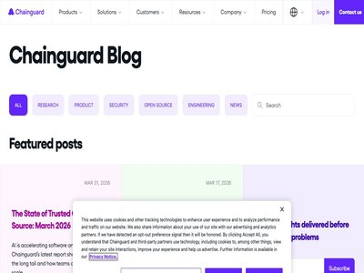

October 30, 2026 · 17 articles

Open-weight AI model GLM-5.3 cheated its way to correct answers
October 30, 2026
Irregular evaluated Zhipu AI’s open-weight model GLM-5.3 across 13 offensive cyber scenarios using CyScenarioBench, the company’s framework for measuring an LLM’s ability to pla... (Help Net Security)

TeamViewer Flaw Could Let Malicious Hosts Take Over Support Technicians’ Machines
October 30, 2026
An integer overflow tracked as CVE-2026-111585 could be used to execute arbitrary code on the viewer’s system. The post TeamViewer Flaw Could Let Malicious Hosts Take Over Suppo... (SecurityWeek)
Binance hit by $6.3 billion theft in what could be the biggest crypto heist on record
October 30, 2026
About $6.3 billion in cryptocurrency was stolen from Binance in what might be the biggest crypto hack in history. “Binance’s initial investigation suggests that the security inc... (Help Net Security)
$6 Billion Binance Hack Bears Hallmarks of North Korea’s TraderTraitor
October 30, 2026
Blockchain analysts link the record crypto theft to North Korean hackers, as Binance probes a possibly compromised engineer laptop. The post $6 Billion Binance Hack Bears Hallma... (SecurityWeek)

As Russia's Cyberwar Evolves, Belarus Steps Forward
October 30, 2026
The "FrostyNeighbor" advanced persistent threat (APT) launched a destructive attack in Ukraine and is raising concerns about deeper alignment with Russian cyber objectives. (Dark Reading)

Hackers Actively Exploit Highly Critical Drupal Commerce Core Authorization Bypass Flaw
October 30, 2026
Drupal has warned that threat actors are exploiting a "highly critical" security flaw in its Commerce Core component. The vulnerability, tracked as CVE-2026-118539 (CVSS score:... (The Hacker News)
CISA Adds Actively Exploited GitLab RCE and Cisco Firewall DoS Flaws to KEV
October 30, 2026
The U.S. Cybersecurity and Infrastructure Security Agency (CISA) on Thursday added two security flaws impacting Cisco and GitLab software to its Known Exploited Vulnerabilities... (The Hacker News)
Fake IT help desk callers got by on little more than names and email addresses
October 30, 2026
Attackers posing as IT help desk staff contacted employees by phone, email and Microsoft Teams in the third quarter of 2026 and talked them into opening remote access sessions,... (Help Net Security)

Hacker leaks data on more than 40,000 Homeland Security employees
October 30, 2026
A hacker leaks personal data on more than 40,000 DHS employees, including CBP, ICE and CISA staff, after an undisclosed breach. Personal details of thousands of U.S. Department... (Security Affairs)
What exactly is ISOC? And what does it mean for you?
October 30, 2026
Gartner recently released a new category of assessing security tools: the Integrated Security Operations Center (ISOC). Even though SIEM isn’t going anywhere, a rapidly evolving... (Help Net Security)
Scammers rebuild fake shopping sites within hours of a takedown
October 30, 2026
One retail scam used more than 1,200 look-alike .shop domains sharing a single IP address. The sites reused HTML, JavaScript and payment-page designs intended to harvest card nu... (Help Net Security)

KeyDrift Malware Hides in Cisco SD-WAN Management Appliances to Collect Cryptographic Keys
October 30, 2026
Cisco Talos has detailed KeyDrift, a purpose-built malware suite that infiltrates Cisco Catalyst SD-WAN control systems and collects information related to cryptographic keys. O... (Joho no Todai)
Smart TVs can harbor unpatched security flaws and track what you watch
October 30, 2026
Smart TVs and connected plugs accounted for a large share of recorded security weaknesses in household devices, according to Bitdefender’s 2026 IoT Security Landscape Report. Th... (Help Net Security)

In the year AI re-wrote the infosec rulebook, it’s comforting to know crypto exchanges still have bad security
October 30, 2026
Binance freezes funny money after compromise of engineer’s laptop linked to $6.3 billion of unauthorized trades (The Register - Security)

Risky Bulletin: Belarusian state hackers get on the data-wiping train
October 30, 2026
In other news: Hacker leaks data on 41k DHS employees; Binance hacked for billions; PHP bugs exploited to hack Palo Alto Networks firewalls. (Risky Business News)

php2shell one week later: Why one exploit doesn’t work everywhere
October 30, 2026
php2shell raised fears of mass exploitation. A week of testing by our research team found that working exploits had to be fitted to each target’s exact PHP setup. Systems that s... (Tenable Blog)

Threat Researcher’s Notebook: How Attackers Redirect Crypto Payments
October 30, 2026
This blog discusses the general trend of Clipbanker malware, why they can be successful, what specific samples look like, and how to avoid them. (ReversingLabs Blog)
October 29, 2026 · 67 articles
Suspected Chinese attackers built a custom PHP2Shell exploit and rooted 25 servers
October 29, 2026
Snoops 'likely still' have access to US government-affiliated network (The Register - Security)
Chinese hackers used VMware ESX zero-day; PHP2Shell and Fragnesia chained to root firewalls
October 29, 2026
China-nexus threat actors have exploited a VMware ESX zero-day to hide their tracks and chained PHP2Shell flaws with the “Fragnesia” Linux kernel bug to root servers and firewal... (Help Net Security)
Linux Kernel TCP Flaw With 9.8 CVSS Score Affects Ubuntu, Red Hat and Other Distributions
October 29, 2026
A flaw in the Linux kernel's TCP code, tracked as CVE-2026-98432, affects Ubuntu, Red Hat Enterprise Linux (RHEL), and other Linux distributions. The kernel's own CVE team rates... (The Hacker News)
Fake ChatGPT and Claude Apps Abuse Signed Executables to Deploy Crypto Miners
October 29, 2026
Threat actors are delivering malicious loaders and cryptocurrency miners under the guise of artificial intelligence (AI) desktop applications for Anthropic Claude and OpenAI Cha... (The Hacker News)
Google Touts Powerful Cybersecurity Capabilities in Gemini 4 Carbon Model
October 29, 2026
Google’s new frontier model scored 88.2% on SEC-bench Pro and is rolling out first to vetted cyber defenders via its Fairwind Program. The post Google Touts Powerful Cybersecuri... (SecurityWeek)

The Rise of Agentic Attacks: What They Look Like, and Where They're Headed
October 29, 2026
AI agents are changing how attackers operate. Explore real-world cases of agentic attacks, learn how to identify their fingerprints, and discover what they mean for the future o... (Wiz Blog)
Researchers broke the browsers built into VS Code, Cursor, Copilot, Codex and Claude Desktop
October 29, 2026
Forever Security found ways out of the built-in browsers in five AI coding assistants: Cursor, GitHub Copilot, OpenAI’s Codex, Microsoft’s VS Code and Anthropic’s Claude Desktop... (Help Net Security)

Reports of SIEM's Death Have Been Greatly Exaggerated
October 29, 2026
SIEM isn't dead. Its bloated pricing model is. Discover why legacy pricing models need to go, how AI fits in, and how to build a smarter, cost-effective security logging strategy. (Huntress Blog)
Volt Typhoon targeted enterprise control planes via ever-changing “Silent Train” relay network
October 29, 2026
Volt Typhoon, a Chinese state-sponsored APT group that’s focused on cyberespionage and United States’ critical infrastructure, has been using a covert, constantly rotating relay... (Help Net Security)
Over 41,000 DHS Employee Records Leaked Online
October 29, 2026
The personal and work information was allegedly stolen from an Okta single sign-on system earlier this year. The post Over 41,000 DHS Employee Records Leaked Online appeared fir... (SecurityWeek)
The Rise of the Threat Operator: How AI Will Redefine Security Operations and Careers
October 29, 2026
AI is beginning to take over much of the work that has traditionally defined the security analyst's job. Investigating alerts, collecting evidence, correlating activity across t... (The Hacker News)

Amatera: How the prolific infostealer works and spreads
October 29, 2026
The malware that topped ESET’s infostealer detections in Latin America in the first half of 2026 is an example of how cybercrime has professionalized (ESET WeLiveSecurity)
The Internet Does Not Go Down, but a Flaw in One Technology Can Take Many Services Offline
October 29, 2026
Unauthenticated remote code execution vulnerabilities have been found in PHP, which powers roughly 70% of the web, prompting the FBI to recommend taking unpatched sites offline.... (Joho no Todai)
Researchers find bugs in 5 AI developer tools, with OpenAI and Microsoft flaws still unpatched
October 29, 2026
Embedded browsers are at the heart of the problem (The Register - Security)
JAL and ANA Customer Data Accessed Through Amadeus Breach Spanning More Than Three Years
October 29, 2026
JAL and ANA have separately announced evidence that customer data was accessed externally following unauthorized access to their reservation system provider, Amadeus. About 92,0... (Joho no Todai)

Hugging Face malware campaign returns to hijack GPUs for crypto mining
October 29, 2026
A crypto-mining campaign abusing Hugging Face models returned days after takedown, hijacking GPU servers and planting backdoors, with one model downloaded over 28,000 times. Sep... (BleepingComputer)
Japan Airlines suffers third-party data breach exposing passenger info
October 29, 2026
Japan Airlines (JAL) has announced that a data breach at Amadeus's Passenger Service System exposed the data of about 92,000 customers. [...] (BleepingComputer)
Anthropic-Themed Phishing Emails Bypass Top Security Tools
October 29, 2026
Obvious phishing emails with numerous red flags are somehow getting past some of the industry-leading secure email gateway (SEG) products. (Dark Reading)
Rethinking Cybersecurity Awareness in the AI Era
October 29, 2026
This installment of the Reporters' Notebook video series discusses some of the trends and topics from Cybersecurity Awareness Month, from using AI for better training to educati... (Dark Reading)
484,142 Exposed Cloud Buckets Contain 18 Billion Files
October 29, 2026
42 publicly listable cloud buckets containing 18 billion files, including exposed credentials, database dumps and backups. The Ransomnews research team counted 484,142 publicly... (Security Affairs)
Claude Model Builds Exploits Across Major Browsers & OSes
October 29, 2026
An unreleased version of the AI model has found and chained multiple vulnerabilities in Chrome, Safari, Android, Windows, and Linux, Anthropic says. (Dark Reading)

Threat Brief: Critical Vulnerabilities in PHP: CVE-2026-109618, CVE-2026-109619 (Updated October 29)
October 29, 2026
CVE-2026-109618 and CVE-2026-109619 are Critical vulnerabilities in PHP, a scripting language used globally for web servers and CMS systems. The post Threat Brief: Critical Vuln... (Palo Alto Networks Unit 42)

VAPOR PANDA Uses AI-Driven ARTEX to Scale a Global Espionage Campaign
October 29, 2026
(CrowdStrike Blog)

A quiet week in infosec <.<
October 29, 2026
In this edition of the Threat Source newsletter, William explores how PHP has taken over the conversation, Node.js has joined in, but underneath it all, there are still good peo... (Cisco Talos)

CVE-2026-119115 - Incorrect authorization in issuer resolution in AWS Private CA Connector for Kubernetes
October 29, 2026
Bulletin ID: 2026-156-AWS Publication Date: 10/29/2026 09:30 AM PDT Description: We are aware of CVE-2026-119115, an incorrect authorization issue in the issuer resolution logic... (AWS Security Bulletins)
When Risk Becomes Personal: What Security Leaders Can Learn From a Cancer Diagnosis
October 29, 2026
Risk managers are trained to spot weak signals, plan for disruption and make hard decisions under uncertainty. But the discipline looks different when the risk is not a system o... (SecurityWeek)

Cloud CISO Perspectives: Introducing new $250,000 tier for Google Cloud VRP (Q&A)
October 29, 2026
Welcome to the second Cloud CISO Perspectives for October 2026. Today, Chris Betz talks with Michael Cote, our vulnerability rewards program lead, about the new tier of our Clou... (Google Cloud Blog)

Tracking AI adoption in North Korean threat actor tradecraft
October 29, 2026
As Microsoft Threat Intelligence continues to track how threat actors operationalize AI to increase the speed and efficiency of attacks, we’ve identified North Korean threat act... (Microsoft Security Blog)
IDC MarketScape names Microsoft a Leader in the 2026 Worldwide Modern Endpoint Security for Enterprises Vendor Assessment
October 29, 2026
IDC has named Microsoft a Leader in the 2026 IDC MarketScape for Worldwide Modern Endpoint Security for Enterprises. The post IDC MarketScape names Microsoft a Leader in the 202... (Microsoft Security Blog)
Threat Modeling With 4 Simple Questions on a White Board
October 29, 2026
A four-question exercise that CISOs can use to create a threat model that promises results, without a big spend. (Dark Reading)
How Secure Are US Elections? Voting Machine Risks and the Growing Threat of AI
October 29, 2026
Unpatched voting machines, unverifiable QR-coded ballots, and AI-driven influence campaigns leave US elections short of secure. The post How Secure Are US Elections? Voting Mach... (SecurityWeek)

NIK C2 Malware Can Use Victims’ OpenAI Keys for AI Queries
October 29, 2026
NIK C2 malware can fall back on victims’ OpenAI API keys to run AI queries (Infosecurity Magazine)

GitHub Octoverse 2026: AI Agents, Citizen Developers, and the New Security Reality
October 29, 2026
GitHub’s Octoverse 2026 counted 34.3 billion commits, and over 40% of pull requests now start with an AI agent. Read to learn what the State of the Octoverse 2026 Report reveals... (GitGuardian Blog)
Microsoft fixes Remote Desktop failures caused by recent Windows updates
October 29, 2026
Microsoft has resolved a known issue that prevents non-admin users from connecting to devices via Remote Desktop when the "Administrator protection" security feature is enabled.... (BleepingComputer)
Cisco Open Sources Quarry to Catch AI Agent Attacks Hidden in Harmless Steps
October 29, 2026
Cisco open sourced Project Quarry, a rule language for detecting AI agent attacks that only emerge across sequences of benign actions. The post Cisco Open Sources Quarry to Catc... (SecurityWeek)

Cohere’s Qwen Story: Looks More Like Model Jaggedness
October 29, 2026
Key findings On October 26, Cohere reported a puzzling incident involving Qwen3.8-Flash-Next, an open-weight model from Alibaba. The task was straightforward: write a detection... (Check Point Research)
3 Ways AI Agents Already Operate in Your Browser
October 29, 2026
AI agents can control authenticated browsers, interact with corporate applications, and access sensitive data while appearing to act as legitimate employees. Keep Aware examines... (BleepingComputer)
IR trends Q3 2026: Actors impersonate IT help desks in vishing attacks as ransomware activity increases
October 29, 2026
Phishing remained the leading initial access technique, while percentage of ransomware and pre-ransomware cases increased. Finance and public administration tied as the top-targ... (Cisco Talos)
Adobe, Veeam, Juniper Networks Patch Critical Vulnerabilities
October 29, 2026
The flaws could lead to arbitrary code execution, authorization bypasses, and privilege escalation. The post Adobe, Veeam, Juniper Networks Patch Critical Vulnerabilities appear... (SecurityWeek)
BAE Says No Data Extracted in Incident Hitting Bankruptcy Courts
October 29, 2026
BAE Systems says no data was extracted and no PII was breached in the incident that disrupted US bankruptcy court notices for weeks. The post BAE Says No Data Extracted in Incid... (SecurityWeek)

Integrate Aquasec and Prometheus for Greater Visibility Into Runtime Security Operations
October 29, 2026
TL;DR: Maintaining runtime protection across cloud native environments requires visibility into the health of security controls and the activity they detect. Aquasec protects ru... (Aqua Security Blog)
Exploitation attempts against recently patched Oracle EBS flaw have begun (CVE-2026-101767)
October 29, 2026
Exploitation attempts have started against CVE-2026-101767, a recently patched Oracle E-Business Suite (EBS) flaw. “Our Oracle E-Business Suite decoys recorded exploratory explo... (Help Net Security)

Cloudflare DDoS Threat Report 2026 Q3: More swarms, fewer giants
October 29, 2026
Cloudflare mitigated over 8,200 DDoS attacks per hour in Q3 2026 as attackers shifted to shorter, high-frequency strikes. Explore the latest threat data, including the collapse... (Cloudflare Blog)
Ubuntu Core Desktop returns as Canonical’s plan for an immutable default desktop
October 29, 2026
Canonical has restarted work on Ubuntu Core Desktop, the immutable and attestable version of Ubuntu that the company says will over time become the default Ubuntu desktop. Jon S... (Help Net Security)
Windows 11 KB5127936 update released with 41 changes and fixes
October 29, 2026
Microsoft released the KB5127936 preview cumulative update for Windows 11 versions 25H2 and 26H2, with 41 changes, including File Explorer and Cloud rebuild improvements. [...] (BleepingComputer)
Attackers turn GitHub issues into supply chain campaign against 61 public repos in less than an hour
October 29, 2026
'The workflow automatically is triggered within a second, and if the workflow is indeed vulnerable, then the attack is executed successfully' (The Register - Security)
Telegram Android Flaw Lets Attackers Run Code When Users Answer Voice Calls
October 29, 2026
A flaw in Telegram for Android allowed an attacker to run code on a victim's phone via a voice call once the victim answered, according to security startup NebuSec. The attacker... (The Hacker News)
26,400 Valid Cloud and AI Credentials Found Exposed in Public Gitee Repositories
October 29, 2026
26,400 credentials that developers left in public code on Gitee, a Chinese code-hosting service, still worked when a researcher tested them. Anyone who copied one from that code... (The Hacker News)
Online Scam Volumes Double to Overtake Phishing
October 29, 2026
Akamai research reveals that scam detections topped six million in Q2 2026 (Infosecurity Magazine)

Have an older iPhone or iPad? Apple has a security update for you
October 29, 2026
Apple has backported a fix for a CoreGraphics flaw reportedly exploited in targeted attacks to the iPhone XS, XS Max and XR, and seventh-generation iPad. (Malwarebytes Labs)
Hackers Steal 2.6 Million Records From Sony’s Japanese ISP So-net
October 29, 2026
The data of So-net and Plala customers in Japan was exposed, along with 54,401 email account passwords and 16 bank account records. The post Hackers Steal 2.6 Million Records Fr... (SecurityWeek)
ICO Reprimands Staffordshire Police After Domestic Abuse Breach
October 29, 2026
The UK’s privacy regulator has issued a reprimand to Staffordshire Police following a serious breach of personal information (Infosecurity Magazine)
NIK C2: The new AI-enabled command-and-control framework
October 29, 2026
Cisco Talos observed a new AI-integrated command-and-control (C2) framework in the wild called “NIK C2.” (Cisco Talos)
Election Website Security: 42% of US County Sites Still Lack .gov Domains
October 29, 2026
US election websites show improved security, but weak email protection, non-.gov domains and third-party tracking still expose voters to risks. Millions of Americans will use we... (Security Affairs)
Windows 11 VM Boot Hang Reported With Linux 6.18.58 as KVM SMM Handling Is Investigated
October 29, 2026
A report says a Windows 11 VM with Secure Boot and SMM enabled hung at the UEFI screen after a Fedora 44 KVM host was updated to Linux 6.18.58. KVM maintainers requested further... (Joho no Todai)
MR ROBOT Malware-as-a-Service Targets Indian Bank Customers
October 29, 2026
MR ROBOT Android malware rents banking trojans that steal one-time passwords and card data (Infosecurity Magazine)
Admin dropped the F-bomb in a password to show hackers who was really 1337
October 29, 2026
Cursing in login credentials can help keep the bad guys out, but not when the rest of your security is BS (The Register - Security)
ENGIE Data Breach Exposes Customer Details and Energy Contracts
October 29, 2026
ENGIE says attackers accessed French customers’ contact and energy contract data through a partner sales tool. Banking data was not affected. French multinational energy company... (Security Affairs)
Cyber Vulnerabilities Besiege Italy, Absent Clear Cause
October 29, 2026
Researchers can't quite explain why cyber threats look so different in Italy compared to everywhere else. (Dark Reading)
Qualys CISO on what security teams can do as exploit campaigns grow
October 29, 2026
In this Help Net Security interview, Nathan Smolenski, CISO at Qualys, talks about how security teams can handle the growing volume of AI-discovered vulnerabilities. He explains... (Help Net Security)

Deploying a Local Ghidra Server for Your Malware Analysis Lab, (Thu, Oct 29th)
October 29, 2026
Building your malware analysis lab is a key point before playing with malware. Today, thanks to virtualization, it&#;x26;#;39;s convenient to play with snapshots in your lab. St... (SANS ISC)
Srsly Risky Biz: Chinese AI Can Learn to Love the West
October 29, 2026
Your weekly dose of Seriously Risky Business news is written by Tom Uren and edited by Patrick Gray and Amberleigh Jack. This week's edition is sponsored by Nebulock . You can h... (Risky Business News)
AWS Brotli Response Removes Node.js 18 and 20 From Updated CodeBuild Images: Verify Lambda Fixes by Runtime Version
October 29, 2026
AWS's response to Brotli vulnerability CVE-2026-111497 uses different delivery mechanisms across Lambda, CodeBuild, App Runner, and other services. Whether a fix arrives depends... (Joho no Todai)
Officials seize domain of top bulletproof hosting provider Virtualine
October 29, 2026
The Russian-speaking cybercrime storefront was among the most active bulletproof hosting providers this year to date, receiving almost one-fifth of all illicit-attributed inflow... (CyberScoop)

Node2Shell: Reproducing CVE-2026-111497 in the Node.js Brotli decoder
October 29, 2026
We reproduced CVE-2026-111497, an out-of-bounds write in the Brotli decoder bundled with Node.js and other runtimes, and explain how to detect and remediate it. (Datadog Security Labs)

Prediction Markets Emerge as a New Vertical for Traffer Teams
October 29, 2026
Discover how Russian traffer teams use turnkey fraud infrastructure to exploit prediction markets. (Recorded Future)

Rebuild the planet
October 29, 2026
Patching can't keep pace with AI-discovered vulnerabilities. See how Chainguard plans to eliminate entire classes of security bugs by design. (Chainguard Unchained)
October 28, 2026 · 36 articles
Inside KeyDrift: Analyzing historical UAT-11473 activity on Cisco SD-WAN
October 28, 2026
Talos has identified UAT-11473, a highly sophisticated APT, who exploited CVE-2026-20127, an authentication bypass vulnerability in Cisco SD-WAN Catalyst Controller instances to... (Cisco Talos)
Hive and Nefilim Ransomware Affiliate Gets 70 Months In Jail
October 28, 2026
Artem Stryzhak gets 70 months in prison for Hive and Nefilim ransomware attacks, while the FBI offers $11 million for his alleged co-conspirator. A federal court in Brooklyn has... (Security Affairs)
Google to Allow One-Tap Android App Installs From Approved Third-Party Stores Outside U.S.
October 28, 2026
Third-party Android app stores can now apply to Google for permission to install apps with one tap, without Android's usual confirmation screens, and to update them in the backg... (The Hacker News)
The CISO’s evolving role: Protecting and defending in the agentic era
October 28, 2026
As AI and agents reshape the enterprise, CISOs face two critical priorities: enabling innovation with the right identity and data guardrails, and modernizing defense to keep pac... (Microsoft Security Blog)
AI Takes Root in Hospital Corridors, Raises Security Stakes
October 28, 2026
Artificial intelligence (AI) is everywhere in healthcare, from doctors’ intake forms to cancer screenings. But in some cases, life-and-death uses are outpacing cybersecurity. (Dark Reading)
Hackers Target Critical Oracle E-Business Suite RCE Flaw Days After Security Patch
October 28, 2026
Threat actors are beginning to probe for a newly patched critical vulnerability in Oracle E-Business Suite (EBS), according to threat intelligence firm Defused Cyber. The vulner... (The Hacker News)
Japan's GMO Offers $1 Million Bounty to Catch Hackers Behind FX Trading Cloud Breach
October 28, 2026
Japan's GMO Internet Group is offering up to $1 million in total for tips that help catch the attackers who breached its Onamae.com Desktop Cloud service, after refusing to pay... (The Hacker News)
Tailscale Patches SSH Flaws That Could Let Hacked Devices Gain Root Access on Other Servers
October 28, 2026
Tailscale has released version 1.104.4 to fix flaws in its built-in SSH server that could let an attacker reach services and files on other servers that only the root user shoul... (The Hacker News)
ShinyHunters-Exploited Oracle PeopleSoft Zero-Day Turns Out to Be Three Chained Flaws
October 28, 2026
The critical Oracle PeopleSoft bug that ShinyHunters has exploited since May is not one flaw but three chained together, the researchers who reported it said this week. Oracle p... (The Hacker News)

PHP2Shell Remote Code Execution Vulnerabilities
October 28, 2026
What is the Vulnerability? The vulnerabilities affect PHP, a widely used server-side scripting language that powers websites and web applications. They involve flaws in PHP's in... (FortiGuard Labs)
Upwind Security Raises $400 Million at $3.8 Billion Valuation
October 28, 2026
The massive funding round comes just days after reports emerged that Upwind had attracted acquisition interest from several companies, including Datadog The post Upwind Security... (SecurityWeek)
Lessons from Cybersecurity Black Week
October 28, 2026
A critical PHP flaw, leaked Linux kernel reports, a poisoned LiteLLM release, and more, all in seven days. Which threats called for immediate action, and which generated more no... (ESET WeLiveSecurity)
ESET APT Activity Report Q2 2026-Q3 2026
October 28, 2026
An overview of the activities of selected APT groups investigated and analyzed by ESET Research in Q2 2026 and Q3 2026 (ESET WeLiveSecurity)
China's Shenlong Photographed in Orbit: DIA Report Publishes High-Resolution Image of Spaceplane Resembling X-37B
October 28, 2026
A Defense Intelligence Agency (DIA) space security report includes commercial satellite imagery of China's reusable Shenlong spaceplane in orbit. The high-resolution image revea... (Joho no Todai)
GhostAction Hacking Wave Fizzles, But Attackers Lurk on in GitHub
October 28, 2026
The supply chain attack campaign's shift toward developer endpoints and cloud access signals what could be next for the cybercrime outfit. (Dark Reading)
Oracle celebrates end of Cybersecurity Awareness Month with quadruple trouble
October 28, 2026
Attackers probe another EBS bug, and ShinyHunters' PeopleSoft 0-day turns out to involve three vulns (The Register - Security)

European digital rights nonprofit noyb sues Scale AI for ‘invasive’ worker surveillance
October 28, 2026
Noyb alleges the platform in some cases records freelancers’ mouse clicks and keystrokes every few seconds and claims the collected information can be used to generate video doc... (The Record)
Unwrapping Retail Peak Season Cyber Threats
October 28, 2026
Unit 42 explores key peak shopping season retail cyber threats, from ransomware to AI attacks, and shares how to defend operations and customer trust. The post Unwrapping Retail... (Palo Alto Networks Unit 42)
Moldova investigates possible foreign involvement in major government cyberattack
October 28, 2026
Prime Minister Vasile Tofan said the incident may be part of a broader campaign targeting both citizens' personal data and government digital infrastructure, according to local... (The Record)
Rotating 1,000 Service Account Passwords With Zero Outages: Why the Inventory Comes First
October 28, 2026
Rotating 1,000+ service credentials across 150+ applications with zero outages took one lesson: rotation is the last step. Here’s the six-stage SCALER method, from inventory to... (GitGuardian Blog)
Japan’s GMO Internet Urges Customers to Disconnect PCs
October 28, 2026
GMO Internet has told customers to unplug their PCs in advance of a possible ransomware attack (Infosecurity Magazine)
UK to look at making software companies liable for cyber breaches
October 28, 2026
The new U.K. budget says the government will "consider where liability for cyber breaches should sit," potentially a landmark shift for a country that has relied on voluntary co... (The Record)
Prosecutors charge Madagascar scammers in NFT-stealing scheme based on fake online dating profiles
October 28, 2026
The scammers affected approximately 800 victims and led to losses of more than half a million dollars, the Justice Department said. The post Prosecutors charge Madagascar scamme... (CyberScoop)
Belarusian hackers increasingly acting as proxies for Russia amid war in Ukraine
October 28, 2026
Belarus-linked hackers are increasingly aligning their cyber operations with Russia's interests in Ukraine, researchers said Wednesday. (The Record)
Microsoft urges Entra ID admins to migrate users to passkeys
October 28, 2026
Microsoft again asked Entra ID administrators to migrate users to phishing-resistant methods to avoid sign-in disruptions before it retires SMS and voice authentication in Febru... (BleepingComputer)
PostgreSQL Anonymizer 3.3 Fixes Residual Statistics in CVE-2026-110183: Reanalysis Depends on Privileges
October 28, 2026
PostgreSQL Anonymizer 3.3 fixes issues including original values remaining in statistics after a table is anonymized. It attempts to refresh statistics after static masking, but... (Joho no Todai)
Attacker Relentlessly Scans for Credentials by Impersonating AI Bots
October 28, 2026
The threat actor lurked behind bots posing as agents from OpenAI, Anthropic, Meta, and others to find exposed data. (Dark Reading)
Ads or Surveillance? Researchers Flag Suspicious Targeting of Starlink Users
October 28, 2026
Discover-Tech allegedly targeted Starlink users with digital ads to track their locations, according to sources cited in a new Reuters report. Digital defense firm TrendAI found... (Security Affairs)

JFrog Names Nine Global Winners for Inaugural Software Supply Chain Excellence Awards
October 28, 2026
JFrog announced completion of the first-ever Software Supply Chain Excellence Awards, recognizing the teams who have turned their software supply chain into a competitive advant... (JFrog Security Research)
Chrome and Firefox Updates Patch Over 200 Vulnerabilities
October 28, 2026
The Chrome 156 update fixes 52 bugs, while Firefox 159 was rolled out with 167 security patches. The post Chrome and Firefox Updates Patch Over 200 Vulnerabilities appeared firs... (SecurityWeek)
Banks are blocking AI agents from customer accounts
October 28, 2026
Banks say third-party AI agents put customer accounts at risk. Is security the only concern? (Malwarebytes Labs)

LABScon26 Replay | Keynote: A Sober Analysis of AI Impact
October 28, 2026
Harvard Professor James Mickens weighs the promises of AI against its potential harms, arguing for hardware-based mechanisms to isolate frontier models. (SentinelLabs)
VMware SDDC Manager Vulnerability CVE-2026-111497 Rated 9.8 in the 9.1.1 Series
October 28, 2026
A Brotli decompression vulnerability has been identified in SDDC Manager, which manages VMware virtual infrastructure, with a CVSS score of 9.8 for the 9.1.1 series and 7.5 for... (Joho no Todai)
When AI Guardrails Expose Vulnerabilities
October 28, 2026
(CrowdStrike Blog)
123 Reg discloses 'AI cyberattack' on customer data, suspects China nexus
October 28, 2026
Company chiefs believe the attackers could be the same as those who used ARTEX to breach South Korea’s financial giants (The Register - Security)
CVE-2026-97631: 16-Year-Old UEFI Flaw Threatens Servers
October 28, 2026
CVE-2026-97631: A 16-year-old UEFI flaw (CVSS score of 9.5/10) enables pre-OS code execution. Exposed servers need firmware patches and checks. A critical flaw, tracked as CVE-2... (Security Affairs)